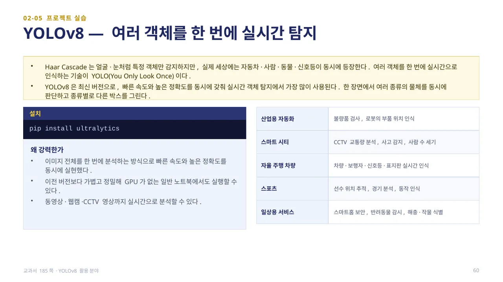
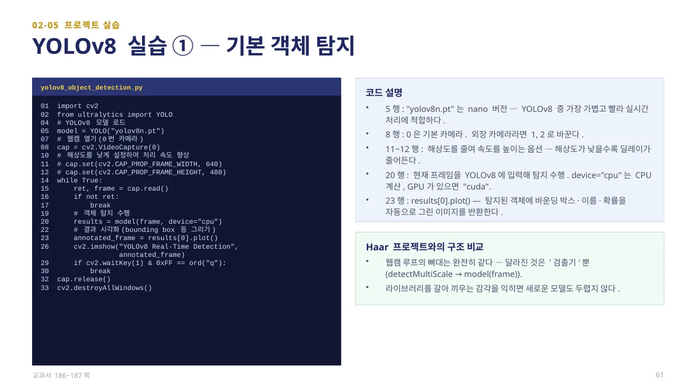
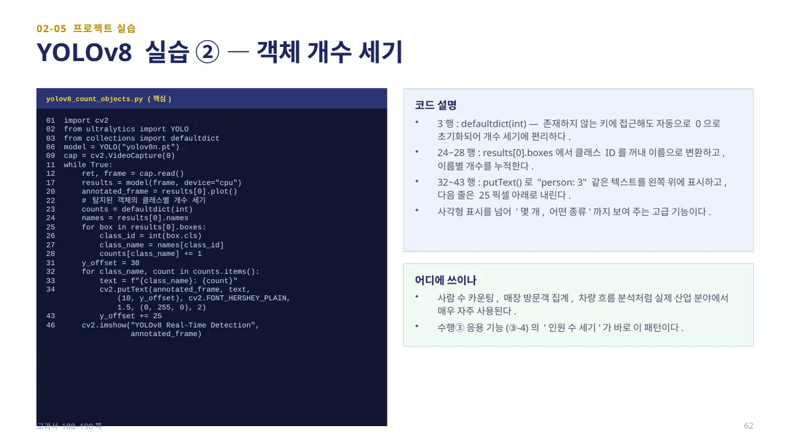
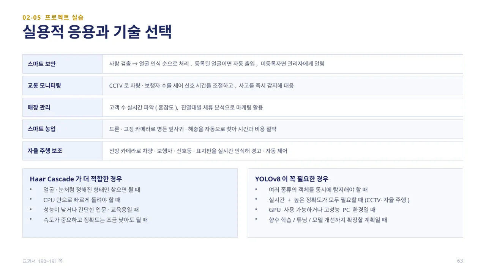
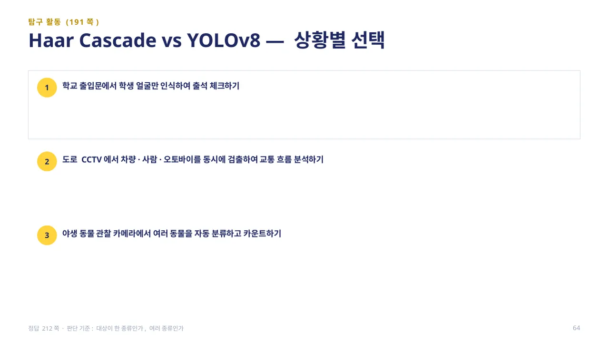

중단원 02. 컴퓨터 비전 라이브러리 활용 · 147–193쪽 소단원 05. 컴퓨터 비전 프로젝트 실습· 177–191쪽
이 웹 주제의 연계 범위: 185–191쪽
교과서 185–191쪽
YOLOv8 객체 탐지와 개수 표시
박스·클래스·신뢰도를 읽고 프레임별 개수를 세어 보세요.

Haar Cascade는 얼굴·눈처럼 특정 객체만 감지하지만, 실제 세상에는 자동차·사람·동물·신호등이 동시에 등장합니다. 여러 객체를 한 번에 실시간으로 인식하는 기술이 YOLO(You Only Look Once)입니다. YOLOv8은 최신 버전으로, 빠른 속도와 높은 정확도를 동시에 갖춰 실시간 객체 탐지에서 가장 많이 사용됩니다. 설치는 pip install ultralytics입니다.
이미지 전체를 한 번에 분석하는 방식으로 빠른 속도와 높은 정확도를 동시에 실현했고, 이전 버전보다 가볍고 정밀해 GPU가 없는 일반 노트북에서도 실행할 수 있습니다. 산업용 자동화(불량품 검사), 스마트 시티(CCTV 교통량 분석), 자율 주행(차량·보행자·신호등 인식), 스포츠(선수 위치 추적), 일상 서비스(스마트홈 보안)까지 활용 분야가 넓습니다. (교과서 185쪽)

yolov8_object_detection.py — 5행model = YOLO("yolov8n.pt")에서 “nano” 버전은 YOLOv8 중 가장 가볍고 빨라 실시간 처리에 적합합니다. 8행cv2.VideoCapture(0)의 0은 기본 카메라이고, 11~12행은 해상도를 줄여 속도를 높이는 선택 옵션입니다.
20행model(frame, device="cpu")로 현재 프레임을 입력해 탐지를 수행합니다(GPU가 있으면 "cuda"). 23행results[0].plot()은 탐지된 객체에 바운딩 박스·이름·확률을 자동으로 그린 이미지를 반환합니다. 웹캠 루프의 뼈대는 Haar 프로젝트와 완전히 같고, 달라진 것은 ‘검출기’뿐(detectMultiScale → model(frame))입니다 — 라이브러리를 갈아 끼우는 감각을 익히면 새로운 모델도 두렵지 않습니다. (교과서 186~187쪽)

yolov8_count_objects.py — 3행from collections import defaultdict는 존재하지 않는 키에 접근해도 자동으로 0으로 초기화되어 개수 세기에 편리합니다. 24~28행은 results[0].boxes에서 클래스 ID를 꺼내 이름으로 변환하고 이름별 개수를 누적합니다.
32~43행cv2.putText()로 “person: 3”처럼 클래스 이름과 개수를 화면 왼쪽 위에 표시하고, 다음 줄은 25픽셀씩 아래로 내립니다. 사각형 표시를 넘어 ‘몇 개, 어떤 종류’까지 보여 주는 기능으로, 사람 수 카운팅·매장 방문객 집계·차량 흐름 분석처럼 실제 산업 분야에서 자주 사용됩니다 — 수행③ 응용 기능의 ‘인원 수 세기’가 바로 이 패턴입니다. 실습 자료의 cv-yolo-count 예제는 같은 개수 세기를 collections.Counter와 enumerate로 다듬어 구현했습니다 — 동작은 교과서 코드와 같고 표현만 더 간결합니다. (교과서 188~190쪽)

스마트 보안은 사람 검출 → 얼굴 인식 순으로 처리해 등록된 얼굴이면 자동 출입, 미등록자면 관리자에게 알립니다. 교통 모니터링은 CCTV로 차량·보행자 수를 세어 신호 시간을 조절하고 사고를 즉시 감지합니다. 매장 관리는 고객 수를 실시간으로 파악해 혼잡도를 관리하고, 스마트 농업은 드론·고정 카메라로 병든 잎사귀·해충을 자동으로 찾습니다.
Haar Cascade가 더 적합한 경우는 얼굴·눈처럼 정해진 형태만 찾으면 될 때, CPU만으로 빠르게 돌려야 할 때, 속도가 중요하고 정확도는 조금 낮아도 될 때입니다. YOLOv8이 꼭 필요한 경우는 여러 종류의 객체를 동시에 탐지해야 할 때, 실시간 + 높은 정확도가 모두 필요할 때(CCTV·자율 주행), 향후 학습·튜닝까지 확장할 계획일 때입니다. (교과서 190~191쪽)

탐구 활동(191쪽): 1. 학교 출입문에서 학생 얼굴만 인식하여 출석 체크하기, 2. 도로 CCTV에서 차량·사람·오토바이를 동시에 검출하여 교통 흐름 분석하기, 3. 야생 동물 관찰 카메라에서 여러 동물을 자동 분류하고 카운트하기 — 각각 Haar Cascade와 YOLOv8 중 어떤 기술이 적합한지 고르고 이유를 설명해 봅니다.
답 보기답 숨기기
1. Haar Cascade — 한 종류의 대상(학생 얼굴)만 인식하면 되므로 복잡한 모델보다 가볍고 속도가 빠른 Haar Cascade가 효율적입니다. 2. YOLOv8 — 한 번의 분석으로 차량·사람·오토바이 등 여러 객체를 동시에 탐지할 수 있는 다중 객체 인식에 강한 모델이 필요합니다. 3. YOLOv8 — 야생 환경은 조명·거리·자세가 일정하지 않아 학습으로 다양한 형태를 구별하는 YOLOv8이 필요하며, 사슴·토끼·여우 등을 분류하고 개체 수를 계산할 수 있습니다. 판단 기준은 ‘대상이 한 종류인가, 여러 종류인가’입니다. (정답 212쪽)
 인공지능 파이썬 실무
인공지능 파이썬 실무